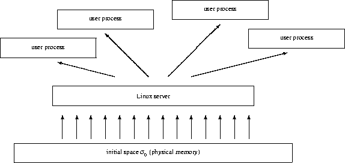
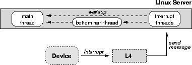
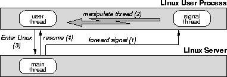
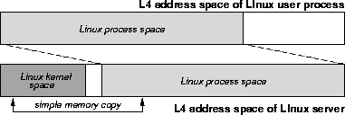
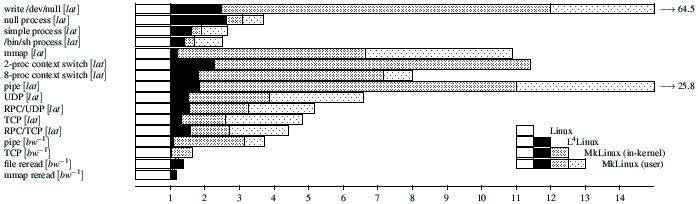
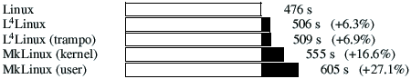
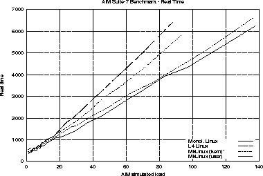
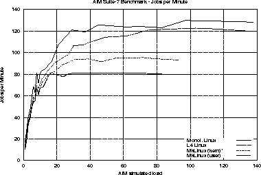

Hermann Härtig - Michael Hohmuth - Jochen Liedtke* - Sebastian Schönberg - Jean Wolter
|
Dresden University of Technology Department of Computer Science D-01062 Dresden, Germany email: <l4-linux@os.inf.tu-dresden.de> |
* |
IBM Watson Research Center 30 Saw Mill River Road Hawthorne, NY 10532, USA email: <jochen@watson.ibm.com> |
This research was supported in part by the Deutsche Forschungsgemeinschaft (DFG) through the Sonderforschungsbereich 358.
Copyright © 1997 by the Association for Computing Machinery, Inc.
16th ACM Symposium on Operating Systems Principles (SOSP'97), October 5-8, 1997, Saint-Malo, France
A PostScript version of this paper is also available.
[ Jump to: Introduction | Related Work | L4 Essentials | Linux on Top of L4 | Compatibility Performance | Extensibility Performance | Alternative Basic Concepts | Conclusions | Availability | Acknowledgments | References ]
For L4Linux, the AIM benchmarks report a maximum throughput which is only 5% lower than that of native Linux. The corresponding penalty is 5 times higher for a co-located in-kernel version of MkLinux, and 7 times higher for a user-level version of MkLinux. These numbers demonstrate both that it is possible to implement a high-performance conventional operating system personality above a µ-kernel, and that the performance of the µ-kernel is crucial to achieve this.
Further experiments illustrate that the resulting system is highly extensible and that the extensions perform well. Even real-time memory management including second-level cache allocation can be implemented at user-level, coexisting with L4Linux.
The operating systems research community has almost completely abandoned research on system architectures that are based on pure µ-kernels, i.e. kernels that provide only address spaces, threads and IPC, or an equivalent set of primitives. This trend is due primarily to the poor performance exhibited by such systems constructed in the 1980's and early 1990's. This reputation has not changed even with the advent of faster µ-kernels; perhaps because these µ-kernel have for the most part only been evaluated using microbenchmarks.
Many people in the OS research community have adopted the hypothesis that the layer of abstraction provided by pure µ-kernels is either too low or too high. The ``too low'' faction concentrated on the extensible-kernel idea. Mechanisms were introduced to add functionality to kernels and their address spaces, either pragmatically (co-location in Chorus or Mach) or systematically. Various means were invented to protect kernels from misbehaving extensions, ranging from the use of safe languages [5] to expensive transaction-like schemes [34]. The ``too high'' faction started building kernels resembling a hardware architecture at their interface [12]. Software abstractions have to be built on top of that. It is claimed that µ-kernels can be fast on a given architecture but cannot be moved to other architectures without losing much of their efficiency [19].
In contrast, we investigate the pure µ-kernel approach by systematically repeating earlier experiments and conducting some novel experiments using L4, a second-generation µ-kernel. (Most first-generation µ-kernels like Chorus [32] and Mach [13] evolved from earlier monolithic kernel approaches; second-generation µ-kernels like QNX [16] and L4 more rigorously aim at minimality and are designed from scratch [24].)
The goal of this work is to show that µ-kernel based systems are usable in practice with good performance. L4 is a lean kernel featuring fast message-based synchronous IPC, a simple-to-use external paging mechanism and a security mechanism based on secure domains. The kernel implements only a minimal set of abstractions upon which operating systems can be built [22]. The following experiments were performed:
Furthermore, comparing L4Linux and MkLinux gives us some insight in how the µ-kernel efficiency influences the overall system performance.
After a short overview of L4 in Section 3, Section 4 explains the design and implementation of our Linux server. Section 5 then presents and analyzes the system's performance for pure Linux applications, based on microbenchmarks as well as macrobenchmarks. Section 6 shows the extensibility advantages of implementing Linux above a µ-kernel. In particular, we show (1) how performance can be improved by implementing some Unix services and variants of them directly above the L4 µ-kernel, (2) how additional services can be provided efficiently to the application, and (3) how whole new classes of applications (e.g. real time) can be supported concurrently with general-purpose Unix applications. Finally, Section 7 discusses alternative basic concepts from a performance point of view.
Most of this paper repeats experiments described by Bershad et al. [5], des Places, Stephen & Reynolds [10], and Engler, Kaashoek & O'Toole [12] to explore the influence of a second-generation µ-kernel on user-level application performance. Kaashoek et al. describe in [18] how to build a Unix-compatible operating system on top of a small kernel. We concentrate on the problem of porting an existing monolithic operating system to a µ-kernel.
A large bunch of evaluation work exists which addresses how certain application or system functionality, e.g. a protocol implementation, can be accelerated using system specialization [31], extensible kernels [5, 12, 34], layered path organisation [30], etc. Two alternatives to the pure µ-kernel approach, grafting and the Exokernel idea, are discussed in more detail in Section 7.
Most of the performance evaluation results published elsewhere deal with parts of the Unix functionality. An analysis of two complete Unix-like OS implementations regarding memory-architecture-based influences, is described in [8]. Currently, we do not know of any other full Unix implementation on a second-generation µ-kernel. And we know of no other recent end-to-end performance evaluation of µ-kernel-based OS personalities. We found no substantiation for the ``common knowledge'' that early Mach3.0-based Unix single-server implementations achieved a performance penalty of only 10% compared to bare Unix on the same hardware. For newer hardware, [9] reports penalties of about 50%.
The L4 µ-kernel [22] is based on two basic concepts, threads and address spaces. A thread is an activity executing inside an address space. Cross-address-space communication, also called inter-process communication (IPC), is one of the most fundamental µ-kernel mechanisms. Other forms of communication, such as remote procedure call (RPC) and controlled thread migration between address spaces, can be constructed from the IPC primitive.
A basic idea of L4 is to support recursive construction of address spaces by user-level servers outside the kernel. The initial address space essentially represents the physical memory. Further address spaces can be constructed by granting, mapping and unmapping flexpages, logical pages of size 2n, ranging from one physical page up to a complete address space. The owner of an address space can grant or map any of its pages to another address space, provided the recipient agrees. Afterwards, the page can be accessed in both address spaces. The owner can also unmap any of its pages from all other address spaces that received the page directly or indirectly from the unmapper. The three basic operations are secure since they work on virtual pages, not on physical page frames. So the invoker can only map and unmap pages that have already been mapped into its own address space.
All address spaces are thus constructed and maintained by user-level servers, also called pagers; only the grant, map and unmap operations are implemented inside the kernel. Whenever a page fault occurs, the µ-kernel propagates it via IPC to the pager currently associated with the faulting thread. The threads can dynamically associate individual pagers with themselves. This operation specifies to which user-level pager the µ-kernel should send the page-fault IPC. The semantics of a page fault is completely defined by the interaction of user thread and pager. Since the bottom-level pagers in the resulting address-space hierarchy are in fact main-memory managers, this scheme enables a variety of memory-management policies to be implemented on top of the µ-kernel.
I/O ports are treated as parts of address spaces so that they can be mapped and unmapped in the same manner as memory pages. Hardware interrupts are handled as IPC. The µ-kernel transforms an incoming interrupt into a message to the associated thread. This is the basis for implementing all device drivers as user-level servers outside the kernel.
In contrast to interrupts, exceptions and traps are synchronous to the raising thread. The kernel simply mirrors them to the user level. On the Pentium processor, L4 multiplexes the processor's exception handling mechanism per thread: an exception pushes instruction pointer and flags on the thread's user-level stack and invokes the thread's (user-level) exception or trap handler.
A Pentium-specific feature of L4 is the small-address-space optimization. Whenever the currently-used portion of an address space is ``small'', 4MB up to 512MB, this logical space can be physically shared through all page tables and protected by Pentium's segment mechanism. As described in [22], this simulates a tagged TLB for context switching to and from small address spaces. Since the virtual address space is limited, the total size of all small spaces is also limited to 512MB by default. The described mechanism is solely used for optimization and does not change the functionality of the system. As soon as a thread accesses data outside its current small space, the kernel automatically switches it back to the normal 3GB space model. Within a single task, some threads might use the normal large space while others operate on the corresponding small space.
Originally developed for the 486 and Pentium architecture, experimental L4 implementations now exist for Digital's Alpha 21164 [33] and MIPS R4600 [14]. Both new implementations were designed from scratch. L4/Pentium, L4/Alpha and L4/MIPS are different µ-kernels with the same logical API. However, the µ-kernel-internal algorithms and the binary API (use of registers, word and address size, encoding of the kernel call) are processor dependent and optimized for each processor. Compiler and libraries hide the binary API differences from the user. The most relevant user-visible difference probably is that the Pentium µ-kernel runs in 32-bit mode whereas the other two are 64-bit-mode kernels and therefore support larger address spaces.
The L4/Alpha implementation is based on a complete replacement of Digital's original PALcode [11]. Short, time-critical operations are hand-tuned and completely performed in PALcode. Longer, interruptible operations enter PALcode, switch to kernel mode and leave PALcode to perform the remainder of the operation using standard machine instructions. A comparison of IPC performance of the three L4 µ-kernels can be found in [25].
Many classical systems emulate Unix on top of a µ-kernel. For example, monolithic Unix kernels were ported to Mach [13, ] and Chorus [4]. Very recently, a single-server experiment was repeated with Linux and newer, optimized versions of Mach [10].
To add a standard OS personality to L4, we decided to port Linux. Linux is stable, performs well, and is on the way to becoming a de-facto standard in the freeware world. Our goal was a 100%-Linux-compatible system that could offer all the features and flexibility of the underlying µ-kernel.
To keep the porting effort low, we decided to forego any structural changes to the Linux kernel. In particular, we felt that it was beyond our means to tune Linux to our µ-kernel in the way the Mach team tuned their single-server Unix to the features of Mach. As a result, the performance measurements shown can be considered a baseline comparison level for the performance that can be achieved with more significant optimizations. A positive implication of this design decision is that new versions of Linux can be easily adapted to our system.
Although originally developed for x86 processors, the Linux kernel has been ported to several other architectures, including Alpha, M68k and SPARC [27]. Recent versions contain a relatively well-defined interface between architecture-dependent and independent parts of the kernel [17]. All interfaces described in this paper correspond to Linux version 2.0.
Linux' architecture-independent part includes process and resource management, file systems, networking subsystems and all device drivers. Altogether, these are about 98% of the Linux/x86 source distribution of kernel and device drivers. Although the device drivers belong to the architecture-independent part, many of them are of course hardware dependent. Nevertheless, provided the hardware is similar enough, they can be used in different Linux adaptions.
Except perhaps exchanging the device drivers, porting Linux to a new platform should only entail changes to the architecture-dependent part of the system. This part completely encapsulates the underlying hardware architecture. It provides support for interrupt-service routines, low-level device driver support (e.g., for DMA), and methods for interaction with user processes. It also implements switching between Linux kernel contexts, copyin/copyout for transferring data between kernel and user address spaces, signaling, mapping/unmapping mechanisms for constructing address spaces, and the Linux system-call mechanism. From the user's perspective, it defines the kernel's application binary interface.
For managing address spaces, Linux uses a three-level architecture-independent page table scheme. By defining macros, the architecture-dependent part maps it to the underlying low-level mechanisms such as hardware page tables or software TLB handlers.
Interrupt handlers in Linux are subdivided into top halves and bottom halves. Top halves run at the highest priority, are directly triggered by hardware interrupts and can interrupt each other. Bottom halves run at the next lower priority. A bottom-half handler can be interrupted by top halves but not by other bottom halves or the Linux kernel.
We chose to be fully binary compliant with Linux/x86. Our test for compatibility was that any off-the-shelf software for Linux should run on L4Linux. Therefore, we used all application-binary-interface definition header files unmodified from the native Linux/x86 version.
In keeping with our decision to minimize L4-specific changes to Linux, we restricted all our modifications to the architecture-dependent part. Also, we restricted ourselves from making any Linux-specific modifications to the L4 µ-kernel. Porting Linux was therefore also an experiment checking whether performance can be achieved without significant µ-kernel-directed optimizations in the Linux kernel, and whether the L4 interface is truly general and flexible.
Under the constraints mentioned above, the natural solution is the straightforward single-server approach, similar to [13]: µ-kernel tasks are used for Linux user processes and provide Linux services via a single Linux server in a separate µ-kernel task. This is indeed how we began our port.
Native Linux maps physical memory one-to-one to the the kernel's address space. We used the same scheme for the L4Linux server. Upon booting, the Linux server requests memory from its underlying pager. Usually, this is , which maps the physical memory that is available for the Linux personality one-to-one into the Linux server's address space (see Figure 1). The server then acts as a pager for the user processes it creates.

Figure 1: L4Linux Address Spaces.
Arrows denote mapping. The Linux server space
can be a subset of .
Although plotted as smaller boxes, the user address spaces
can be larger than the server's address space.
For security reasons, the true hardware page tables are kept inside L4 and cannot be directly accessed by user-level processes. As a consequence, the Linux server has to keep and maintain additional logical page tables in its own address space. For the sake of simplicity, we use the original Pentium-adapted page tables in the server unmodified as logical page tables. Compared to native Linux, this doubles the memory consumption by page tables. Although current memory pricing lets us ignore the additional memory costs, double bookkeeping could decrease speed. However, the benchmarks in Section 5 suggest that this is not a problem.
Only a single L4 thread is used in the L4Linux server for handling all activities induced by system calls and page faults. Linux multiplexes this thread to avoid blocking in the kernel. Multithreading at the L4 level might have been more elegant and faster. However, it would have implied a substantial change to the original Linux kernel and was thus rejected.
The native uniprocessor Linux kernel uses interrupt disabling for synchronization and critical sections. Since L4 also permits privileged user-level tasks, e.g. drivers, to disable interrupts, we could use the existing implementation without modification.
The L4 µ-kernel maps hardware interrupts to messages (Figure 2). The Linux top-half interrupt handlers are implemented as threads waiting for such messages, one thread per interrupt source:
interrupt handler thread:
do
wait for interrupt { L4-IPC } ;
top half interrupt handler ()
od .Another thread executes all bottom halves once the pending top halves have been completed. Executing the interrupt threads and the bottom-half thread on a priority level above that of the Linux server thread avoids concurrent execution of interrupt handlers and the Linux server, exactly as on native uniprocessor Linux.

Figure 2: Interrupt handling in L4Linux.
Since the L4 platform is nearly identical to a bare Pentium architecture platform, we reused most of the device driver support from Linux/x86. As a result, we are able to employ all Linux/x86 device drivers without modification.
Each Linux user process is implemented as an L4 task, i.e. an address space together with a set of threads executing in this space. The Linux server creates these tasks and specifies itself as their associated pager. L4 then converts any Linux user-process page fault into an RPC to the Linux server. The server usually replies by mapping and/or unmapping one or more pages of its address space to/from the Linux user process. Thereby, it completely controls the Linux user spaces.
In particular, the Linux server maps the emulation library and the signal thread code (both described in the following paragraphs) into an otherwise unused high-address part of each user address space.
In accordance with our decision to keep Linux changes minimal, the ``emulation'' library handles only communication with the Linux server and does not emulate Unix functionality on its own. For example, a getpid or read system call is always issued to the server and never handled locally.
L4Linux system calls are implemented using remote procedure calls, i.e. IPCs between the user processes and the Linux server. There are three concurrently usable system-call interfaces:
As required by the architecture-independent part of Linux, the server maps all available physical memory one-to-one into its own address space. Except for a small area used for kernel-internal virtual memory, the server's virtual address space is otherwise empty. Therefore, all Linux server threads execute in a small address spaces which enables improved address-space switching by simulating a tagged TLB on the Pentium processor. This affects all IPCs with the Linux server: Linux system calls, page faults and hardware interrupts. Avoiding TLB flushes improves IPC performance by at least a factor of 2; factors up to 6 are possible for user processes with large TLB working sets.
The native Linux/x86 kernel always maps the current user address space into the kernel space. Copyin and copyout are done by simple memory copy operations where the required address translation is done by hardware. Surprisingly, this solution turned out to have bad performance implications under L4 (see Section 4.3).
Instead, the L4Linux server uses physical copyin and copyout to exchange data between kernel and user processes. For each copy operation, it parses the server-internal logical page tables to translate virtual user addresses into the corresponding ``physical'' addresses in the server's address space, and then performs the copy operation using the physical addresses.
The native Linux kernel delivers signals to user processes by directly manipulating their stack, stack pointer and instruction pointer. For security reasons, L4 restricts such inter-thread manipulations to threads sharing the same address space. Therefore, an additional signal-handler thread was added to each Linux user process (see Figure 3). Upon receiving a message from the Linux server, the signal thread causes the main thread (which runs in the same address space) to save its state and enter Linux by manipulating the main thread's stack pointer and instruction pointer.

Figure 3: Signal delivery in L4Linux. Arrows denote IPC.
Numbers in parentheses indicate the sequence of actions.
The signal thread and the emulation library are not protected against the main thread. However, the user process can only damage itself by modifying them. Global effects of signaling, e.g. killing a process, are implemented by the Linux server. The signal thread only notifies the user process.
All threads mentioned above are scheduled by the L4 µ-kernel's internal scheduler. This leaves the traditional Linux schedule() operation with little work to do. It only multiplexes the single Linux server thread across the multiple coroutines resulting from concurrent Linux system calls.
Whenever a system call completes and the server's reschedule flag is not set (meaning there is no urgent need to switch to a different kernel coroutine, or there is nothing to do in the kernel), the server resumes the corresponding user thread and then sleeps waiting for a new system-call message or a wakeup message from one of the interrupt handling threads.
This behaviour resembles the original Linux scheduling strategy. By deferring the call to schedule() until a process' time slice is exhausted instead of calling it immediately as soon as a kernel activity becomes ready, this approach minimizes the number of coroutine switches in the server and gives user processes the chance to make several system calls per time slice without blocking.
However, there can be many concurrently executing user processes, and the actual multiplexing of user threads to the processor is controlled by the L4 µ-kernel and mostly beyond the control of the Linux server. Native L4 uses hard priorities with round-robin scheduling per priority. User-level schedulers can dynamically change priority and time slice of any thread. The current version of L4Linux uses 10 ms time slices and only 4 of 256 priorities, in decreasing order: interrupt top-half, interrupt bottom-half, Linux kernel, Linux user process. As a result, Linux processes are currently scheduled round robin without priority decay. Experiments using more sophisticated user-level schedulers are planned, including one for the classical Unix strategy.
TLBs are becoming larger in order to hide the increasing costs of misses relative to processor speed. Depending on the TLB size, flushing a TLB upon address-space switch induces high miss costs for reestablishing the TLB working set when switching back to the original address space. Tagged TLBs, currently offered by many processors, form the architectural basis to avoid unnecessary TLB flushes. For the Pentium processor, small address spaces offer a possibility to emulate TLB tagging. However, frequent context switches - in the near future, we expect time slices in the order of 10 µs - can also lead to TLB conflicts having effects comparable to flushes. Two typical problems: (1) due to extensive use of huge libraries, the `hello-world' program compiled and linked in the Linux standard fashion has a total size of 80 KB and needs 32 TLB entries to execute; (2) identical virtual allocation of code and data in all address spaces maximizes TLB conflicts between independent applications. In many cases, the overall effect might be negligible. However some applications, e.g., a predictable multi-media file system or active routing, might suffer significantly.
Constructing small, compact, application-dependent address-space layouts can help to avoid the mentioned conflicts. For this reason, L4Linux offers a special library permitting the customization of the code and data used for communicating with the L4Linux server. In particular, the emulation library and the signal thread can be mapped close to the application instead of always mapping to the default high address-space region. By using this library, special servers can be built that can execute in small address spaces, avoiding systematic allocation conflicts with standard Linux processes, while nevertheless using Linux system calls. Examples of such servers are the pagers used for implementing the memory operations described in Section 6.2.
In the engineering sciences, learning about mistakes and dead ends in design is as important as telling success stories. Therefore, this section describes a major design mistake we made in an early version of L4Linux.
For each Linux process, native Linux/x86 creates a 4GB address space containing both the user space and the kernel space. This makes it very simple for the Linux kernel to access user data: address translation and page-fault signaling are done automatically by the hardware. We tried to imitate this approach by also mapping the current process' user address space into the Linux server's address space (Figure 4). The implementation using a user-level pager was simple. However, we could not map multiple 2.5GB Linux-process spaces simultaneously into the server's 3GB address space. Either the user-space mapping had to be changed on each Linux context switch or the server space had to be replicated. Since the first method was considered too expensive, we ended up creating one server address space per Linux process. Code and data of the server were shared through all server spaces. However, the server spaces differed in their upper regions which had mapped the respective Linux user space.

Figure 4: Copyin/out using hardware address translation in an early version of L4Linux.
Arrows denote memory read/write operations.
Replicating the server space, unfortunately, also required replicating the server thread. To preserve the single-server semantics required by the uniprocessor version of Linux, we thus had to add synchronization to the Linux kernel. Synchronization required additional cycles and turned out to be nontrivial and error-prone.
Even worse, 3GB Linux-server spaces made it impossible to use the small-space optimization emulating tagged TLBs. Since switching between user and server therefore always required a TLB flush, the Linux server had to re-establish its TLB working set for every system call or page fault. Correspondingly, the user process was penalized by reloading its TLB working set upon return from the Linux server.
We discarded this dual-space approach because it was complicated and not very efficient; getpid took 18 µs instead of 4 µs. Instead, we decided to use the single-space approach described in Section 4.2: only one address space per Linux user process is required and the server space is not replicated. However, virtual addresses have to be translated by software to physical addresses for any copyin and copyout operation.
Ironically, analytical reasoning could have shown us prior to implementation that the dual-space approach cannot outperform the single-space approach: a hardware TLB miss on the Pentium costs about 25 cycles when the page-table entries hit in the second-level cache because the Pentium MMU does not load page-table entries into the primary cache. On the same processor, translating a virtual address by software takes between 11 and 30 cycles, depending on whether the logical page-table entries hit in the first-level or in the second-level cache. In general, hardware translation is nevertheless significantly faster because the TLB caches translations for later reuse. However, the dual-space approach systematically made this reuse for the next system call impossible: due to the large server address space, the TLB was flushed every time the Linux-server was called.
Table 1 compares the source code size of the L4Linux adaption with the size of the native Linux/x86 adaption and the Linux kernel. Comment lines and blank lines are not counted. 2000 lines of the original x86-dependent part could be reused unchanged for the L4 adaption; 6500 new lines of code had to be written. Starting from L4 and Linux, it took about 14 engineer months to build the L4Linux system, to stabilize it and to prepare the results presented in this paper.
| lines of C code | |||||
| Linux/x86 | L4Linux | ||||
| architecture | 2,500 | 6,500 | |||
| dependent | 2,000 | 2,000 | |||
|
part | 4,500 | 8,500 | |||
| Linux kernel | 105,000 | ||||
| drivers | 232,700 | ||||
We appear to have been successful in our effort of achieving full Linux binary compatibility. We have used the system as a development environment and regularly use such applications as the X Window system, Emacs, Netscape and X-Pilot. L4Linux appears to be stable, and, as we'll show, can run such extreme stress test as the AIM benchmark [2] to completion.
In this section, we discuss the performance of L4Linux from the perspective of pure Linux applications. The conservative criterion for accepting a µ-kernel architecture is that existing applications are not significantly penalized. So our first question is
First, we compare L4Linux (which always runs in user mode) to the MkLinux variant that also runs in user mode. Mach is known for slow user-to-user IPC and expensive user-level page-fault handling [5, 21]. So benchmarks should report a distinct difference between L4Linux and MkLinux if the µ-kernel efficiency influences the whole system significantly.
A faster version of MkLinux uses a co-located server running in kernel mode and executing inside the µ-kernel's address space. Similar to Chorus' supervisor tasks [32], co-located (in-kernel) servers communicate much more efficiently with each other and with the µ-kernel than user-mode servers do. However, in order to improve performance, co-location violates the address-space boundaries of a µ-kernel system, which weakens security and safety. So our third question is
To obtain comparable and reproducible performance results, the same hardware was used throughout all measurements, including those of Section 6: a 133 MHz Pentium PC based on an ASUS P55TP4N motherboard using Intel's 430FX chipset, equipped with a 256KB pipeline-burst second-level cache and 64MB of 60ns Fast Page Mode RAM.
We used version 2 of the L4 µ-kernel.
L4Linux is based on Linux version 2.0.21, MkLinux on version 2.0.28. According to the `Linux kernel change summaries' [7], only performance-neutral bug fixes were added to 2.0.28, mostly in device drivers. We consider both versions comparable.
Microbenchmarks are used to analyze the detailed behaviour of L4Linux mechanisms while macrobenchmarks measure the system's overall performance.
Different microbenchmarks give significantly different results when measuring operations which take only 1 to 5 µs. Statistical methods like calculating the standard deviation are misleading: two benchmarks report inconsistent results and both calculate very small standard deviation and high confidence. The reason is that a deterministic system is being measured that does not behave stochastically. For fast operations, most measurement errors are systematic. Some reasons are cache conflicts between measurement code and the system to be measured or miscalculation of the measurement overhead. We therefore do not only report standard deviations but show different microbenchmarks. Their differences give an impression of the absolute error. Fortunately, most measured times are large enough to show only small relative deviations. For larger operations, the above mentioned systematic errors probably add up to a pseudo-stochastic behaviour.
For measuring the system-call overhead, getpid, the shortest Linux system call, was examined. To measure its cost under ideal circumstances, it was repeatedly invoked in a tight loop. Table 2 shows the consumed cycles and the time per invocation derived from the cycle numbers. The numbers were obtained using the cycle counter register of the Pentium processor. L4Linux needs approximately 300 cycles more than native Linux. An additional 230 cycles are required whenever the trampoline is used instead of the shared library. MkLinux shows 3.9 times (in-kernel) or 29 times (user mode) higher system-call costs than L4Linux using the shared library. Unfortunately, L4Linux still needs 2.4 times as many cycles as native Linux.
| System | Time | Cycles |
| Linux | 1.68 µs | 223 |
| L4Linux | 3.95 µs | 526 |
| L4Linux (trampoline) | 5.66 µs | 753 |
| MkLinux in-kernel | 15.41 µs | 2050 |
| MkLinux user | 110.60 µs | 14710 |
Figure 5 shows a more detailed breakdown of the L4Linux overhead. Under native Linux, the basic architectural overhead for entering and leaving kernel mode is 82 cycles, the bare hardware costs. In L4Linux, it corresponds to two IPCs taking 356 cycles in total. After deducting the basic architectural overhead from the total system-call costs, 141 cycles remain for native Linux, 170 cycles for L4Linux. The small difference of both values indicates that indeed IPC is the major cause for additional costs in L4Linux.
When removing the part called LINUX in Figure 5, the L4Linux overhead code remains. It uses 45 cache lines, 9% of the first-level cache, including the cache L4 needs for IPC.
| Client | Cycles | Server |
| enter emulation library | 20 | |
| send system call message | 168 | wait for message |
| 131 | - LINUX - | |
| receive reply | 188 | send reply |
| leave emulation library | 19 | |
| --- 526 |
The lmbench [29] microbenchmark suite measures basic operations like system calls, context switches, memory accesses, pipe operations, network operations, etc. by repeating the respective operation a large number of times. lmbench's measurement methods have recently been criticized by Brown and Seltzer [6]. Their improved hbench:OS microbenchmark suite covers a broader spectrum of measurements and measures short operations more precisely. Both benchmarks have basically been developed to compare different hardware from the OS perspective and therefore also include a variety of OS-independent benchmarks, in particular measuring the hardware memory system and the disk. Since we always use the same hardware for our experiments, we present only the OS-dependent parts. The hardware-related measurements gave indeed the same results on all systems.
Table 3 shows selected results of lmbench and hbench. It compares native Linux, L4Linux with and without trampoline, and both versions of MkLinux. Figure 6 plots the slowdown of L4Linux, co-located and user-mode MkLinux, normalized to native Linux. Both versions of MkLinux have a much higher penalty than L4Linux. Surprisingly, the effect of co-location is rather small compared to the effect of using L4. However, even the L4Linux penalties are not as low as we hoped.

Figure 6: lmbench results, normalized to native Linux.
These are presented as slowdowns: a shorter bar is a better result.
[lat] is a latency measurement, [bw-1] the inverse of a bandwidth one.
Hardware is a 133MHz Pentium.
| Test | Linux | L4Linux | MkLinux | ||
| libc.so | trampoline | in-kernel | user | ||
| lmbench Results | |||||
| Latency [µs] | |||||
| write to /dev/null | 2.00 (0%) | 5.26 (10%) | 7.80 (6%) | 24.33 (9%) | 128.97 (2%) |
| Null Process | 973 (1%) | 2749 (4%) | 2765 (1%) | 3038 (1%) | 3601 (1%) |
| Simple Process | 7400 (1%) | 12058 (2%) | 12393 (1%) | 14066 (1%) | 19667 (1%) |
| /bin/sh Process | 42412 (1%) | 61115 (7%) | 62353 (1%) | 73201 (2%) | 106853 (1%) |
| Mmap Latency | 52.20 (2%) | 64.28 (7%) | 69.35 (8%) | 345.33 (2%) | 566.06 (1%) |
| 2-proc ctxsw | 7.00 (0%) | 16.22 (6%) | 18.20 (6%) | 78.67 (9%) | 79.87 (7%) |
| 8-proc ctxsw | 12.40 (4%) | 22.22 (6%) | 28.00 (4%) | 85.67 (3%) | 96.26 (6%) |
| Pipe | 29.00 (2%) | 52.07 (7%) | 69.40 (6%) | 308.33 (1%) | 722.42 (2%) |
| UDP | 159.40 (3%) | 243.02 (4%) | 263.80 (2%) | 613.33 (4%) | 1040.26 (2%) |
| RPC/UDP | 321.40 (1%) | 526.57 (3%) | 528.80 (3%) | 1095.33 (4%) | 1743.29 (2%) |
| TCP | 207.40 (2%) | 287.57 (4%) | 308.80 (5%) | 562.00 (4%) | 1047.03 (2%) |
| RPC/TCP | 459.60 (2%) | 729.76 (5%) | 736.20 (4%) | 1243.33 (4%) | 2014.90 (2%) |
| Bandwidth [MB/s] | |||||
| Pipe | 40.50 (2%) | 37.61 (3%) | 35.25 (3%) | 13.11 (2%) | 10.57 (2%) |
| TCP | 18.03 (2%) | 13.23 (2%) | 13.41 (3%) | 11.54 (1%) | 10.88 (2%) |
| File reread | 41.51 (1%) | 40.43 (1%) | 40.26 (3%) | 37.51 (3%) | 34.04 (2%) |
| Mmap reread | 65.73 (1%) | 54.96 (6%) | 55.03 (7%) | 61.54 (0%) | 58.66 (7%) |
| hbench:OS Results | |||||
| Latency [µs] | |||||
| getpid | 1.69 (0%) | 4.55 (1%) | 6.91 (1%) | 19.14 (1%) | 111.9 (1%) |
| write to /dev/null | 2.74 (0%) | 6.67 (5%) | 8.20 (4%) | 26.30 (1%) | 124.1 (1%) |
| Null Process | 983 (1%) | 2561 (1%) | 2904 (1%) | 3101 (1%) | 3572 (1%) |
| Simple Process | 7490 (1%) | 12431 (1%) | 12433 (1%) | 14144 (1%) | 19255 (0%) |
| /bin/sh Process | 40864 (3%) | 58845 (1%) | 57968 (1%) | 69990 (1%) | 100763 (1%) |
| Mmap Latency 4KB | 25.2 (0%) | 35.0 (2%) | 49.4 (2%) | 242.7 (1%) | 439.6 (1%) |
| Mmap Latency 8MB | 53.7 (1%) | 54.0 (2%) | 74.9 (1%) | 360.1 (1%) | 561.9 (1%) |
| ctx 0K 2 | 8.05 (2%) | 17.1 (4%) | 20.0 (3%) | 69.6 (3%) | 79.9 (2%) |
| ctx2 0K 2 | 8.45 (3%) | 17.0 (3%) | 16.7 (6%) | 76.2 (2%) | 88.6 (3%) |
| Pipe | 31.0 (2%) | 62.3 (3%) | 78.99 (3%) | 316.1 (1%) | 721.6 (1%) |
| UDP | 154 (1%) | 214 (1%) | 251 (3%) | 625 (1%) | 1037 (1%) |
| RPC/UDP | 328 (2%) | 554 (2%) | 577 (3%) | 1174 (1%) | 1763 (1%) |
| TCP | 206 (2%) | 264 (2%) | 302 (1%) | 568 (1%) | 1030 (1%) |
| RPC/TCP | 450 (2%) | 754 (2%) | 760 (3%) | 1344 (1%) | 2035 (1%) |
| Bandwidth [MB/s] | |||||
| Pipe 64KB | 40.3 (1%) | 35.5 (1%) | 32.6 (2%) | 12.7 (1%) | 10.4 (2%) |
| TCP 64KB | 18.8 (1%) | 14.6 (1%) | 14.1 (1%) | 11.6 (1%) | 9.4 (2%) |
| File read 64/64 | 35.3 (1%) | 34.5 (4%) | 32.2 (1%) | 32.7 (3%) | 30.1 (4%) |
| Mmap reread 64KB | 97.5 (1%) | 91.4 (1%) | 78.8 (1%) | 89.4 (1%) | 77.7 (3%) |
In the first macrobenchmark experiment, we measured the time needed to recompile the Linux server (Figure 7). L4Linux was 6-7% slower than native Linux but 10-20% faster than both MkLinux versions.

Figure 7: Real time for compiling the Linux Server.
(133MHz Pentium)
A more systematic evaluation was done using the commercial AIM multiuser benchmark suite VII. It uses Load Mix Modeling to test how well multiuser systems perform under different application loads [2]. (The AIM benchmark results presented in this paper are not certified by AIM Technology.)
AIM uses the shared libc.so so that the trampoline overhead is automatically avoided. Depending on simulated load, Figures 8 and 9 show the required time and the achieved throughput (jobs per minute) for native Linux, L4Linux, and both MkLinux versions. The AIM benchmark successively increases the load until the maximum throughput of the system is determined. (For this reason, it stops at a lower load for MkLinux than for L4Linux and native Linux.)

Figure 8: AIM Multiuser Benchmark Suite VII. Real time
per benchmark run depending on AIM load units. (133MHz Pentium)

Figure 9: AIM Multiuser Benchmark Suite VII. Jobs completed
per minute depending on AIM load units. (133MHz Pentium)
For native Linux, AIM measures a maximum load of 130 jobs per minute. L4Linux achieves 123 jobs per minute, 95% of native Linux. The corresponding numbers for user-mode MkLinux are 81 jobs per minute, 62% of native Linux, and 95 (73%) for the in-kernel version.
Averaged over all loads, L4Linux is 8.3% slower than native Linux, and 6.8% slower at the maximum load. This is consistent with the 6-7% we measured for recompiling Linux.
User-mode MkLinux is on average 49% slower than native Linux, and 60% at its maximum load. The co-located in-kernel version of MkLinux is 29% slower on average than Linux, and 37% at maximum load.
The macrobenchmarks answer our first question. The current implementation of L4Linux comes reasonably close to the behavior of native Linux, even under high load. Typical penalties range from 5% to 10%.
Both macro and microbenchmarks clearly indicate that the performance of the underlying µ-kernel matters. We are particular confident in this result because we did not compare different Unix variants but two µ-kernel implementations of the same OS.
Furthermore, all benchmarks illustrate that co-location on its own is not sufficient to overcome performance deficiencies when the basic µ-kernel does not perform well. It would be an interesting experiment to see whether introducing co-location in L4 would have a visible effect or not.
No customer would use a µ-kernel if it offered only the classical Unix API, even if the µ-kernel imposed zero penalty on the OS personality on top. So we have to ask for the ``added value'' the µ-kernel gives us. One such is that it enables specialization (improved implementation of special OS functionality [31]) and buys us extensibility, i.e., permits the orthogonal implementation of new services and policies that are not covered by and cannot easily be added to a conventional workstation OS. Potential application fields are databases, real-time, multi-media and security.
In this section, we are interested in the corresponding performance aspects for L4 with L4Linux running on top. We ask three questions:
It is widely accepted that IPC can be implemented significantly faster in a µ-kernel environment than in classical monolithic systems. However, applications have to be rewritten to make use of it. Therefore, in this section we compare classical Unix pipes, pipe emulations through µ-kernel IPC, and blocking RPC to get an estimate for the cost of emulation on various levels.
We compare four variants of data exchange. The first is the standard pipe mechanism provided by the Linux kernel: (1) runs on native Linux/x86; (1a) runs on L4Linux and uses the shared library, (1b) uses the trampoline mechanism instead; (1c) runs on the user-mode server of MkLinux, and (1d) on the co-located MkLinux server.
Although the next three variants run on L4Linux, they do not use the Linux server's pipe implementation. Asynchronous pipes on L4 (2) is a user-level pipe implementation that runs on bare L4, uses L4 IPC for communication, and needs no Linux kernel. The emulated pipes are POSIX compliant, except that they do not support signaling. Since L4 IPC is strictly synchronous, an additional thread is responsible for buffering and cross-address-space communication with the receiver.
Synchronous RPC (3) uses blocking IPC directly, without buffering data. This approach is not semantically equivalent to the previous variants but provides blocking RPC semantics. We include it in this comparison because applications using RPC in many cases do not need asynchronous pipes, so they can benefit from this specialization.
For synchronous mapping RPC (4), the sender temporarily maps pages into the receiver's address space. Since mapping is a special form of L4 IPC, it can be freely used between user processes and is secure: mapping requires agreement between sender and receiver and the sender can only map its own pages. The measured times include the cost for subsequent unmapping operations. For hardware reasons, latency here is measured by mapping one page, not one byte. The bandwidth measurements map aligned 64KB regions.
For measurements, we used the corresponding lmbench routines. They measure latency by repeatedly sending 1 byte back and forth synchronously (ping-pong) and bandwidth by sending about 50MB in 64KB blocks to the receiver. The results of Table 4 show that the latency and the bandwidth of the original monolithic pipe implementation (1) on native Linux can be improved by emulating asynchronous pipe operations on synchronous L4 IPC (2). Using synchronous L4 RPC (2) requires changes to some applications but delivers a factor of 6 improvement in latency over native Linux.
| System | Latency | Bandwidth |
| (1) Linux pipe | 29 µs | 41 MB/s |
| (1a) L4Linux pipe | 46 µs | 40 MB/s |
| (1b) L4Linux (trampoline) pipe | 56 µs | 38 MB/s |
| (1c) MkLinux (user) pipe | 722 µs | 10 MB/s |
| (1d) MkLinux (in-kernel) pipe | 316 µs | 13 MB/s |
| (2) L4 pipe | 22 µs | 48-70 MB/s |
| (3) synchronous L4 RPC | 5 µs | 65-105 MB/s |
| (4) synchronous mapping RPC | 12 µs | 2470-2900 MB/s |
Since the bandwidth measurement moves 64KB chunks of data, its performance is basically determined by the memory hardware, in particular by the direct-mapped second-level cache. As proposed by Jonathan Shapiro [35], L4 IPC simulates a write-allocate cache by prereading the destination area when copying longer messages. In the best case, Linux allocates pages such that source and destination do not overlap in the cache; in the worst case, the copy operation flushes every data prior to its next usage. A similar effect can can be seen for L4 pipes.
Linux copies data twice for pipe communication but uses only a fixed one-page buffer in the kernel. Since, for long streams, reading/writing this buffer always hit in the primary cache, this special double copy performs nearly as fast as a single bcopy. The deviation is small because the lmbench program always sends the same 64KB and the receiver never reads the data from memory. As a consequence, the source data never hits the primary cache, always hits the secondary cache and the destination data always misses both caches since the Pentium caches do not allocate cache lines on write misses.
Method (4) achieves a nearly infinite bandwidth due to the low costs of mapping. To prevent misinterpretations: infinite bandwidth only means that the receiver gets the data without communication penalty. Memory reads are still required to use the data.
Table 5 shows the times for selected memory management operations. The first experiment belongs to the extensibility category, i.e., it tests a feature that is not available under pure Linux: Fault measures the time needed to resolve a page fault by a user-defined pager in a separate user address space that simply maps an existing page. The measured time includes the user instruction, page fault, notification of the pager by IPC, mapping a page and completing the original instruction.
| L4 | Linux | |
| Fault | 6.2 µs | n/a |
| Trap | 3.4 µs | 12 µs |
| Appel1 | 12 µs | 55 µs |
| Appel2 | 10 µs | 44 µs |
The next three experiments are taken from Appel and Li [3]. We compare the Linux version with an implementation using native L4 mechanisms. Trap measures the latency between a write operation to a write-protected page and the invocation of the related exception handler. Appel1 measures the time to access a randomly selected protected page where the fault handler unprotects the page, protects some other page and and resumes the faulting access (`trap+prot1+unprot'). Appel2 first protects 100 pages, then accesses them in a random sequence where the fault handler only unprotects the page and resumes the faulting operation (`protN+trap+unprot'). For L4, we reimplemented the fault handlers by associating a specialized pager to the thread executing the test. The new pager handles resolvable page faults as described above and propagates unresolvable page faults to the Linux server.
Real-time applications need a memory management different from the one Linux implements. L4's hierarchical user-level pagers allows both the L4Linux memory system and a dedicated real-time one to be run in parallel. This section evaluates how well this works in practice.
In real-time systems, the optimization criterion is not the average but the worst-case execution time. Since a real-time task has to meet its deadline under all circumstances, sufficient resources for the worst-case must always be allocated and scheduled. The real-time load is limited by the sum of worst-case execution times, worst-case memory consumption, etc. In contrast to conventional applications, the average behaviour is only of secondary importance.
All real-time applications rely on predictable scheduling. Unfortunately, memory caches make it very hard to schedule processor time predictably. If two threads use the same cache lines, executing both threads interleaved increases the total time not only by the context-switching costs but additionally by the cache-interference costs which are much harder to predict. If the operating system does not know or cannot control the cache usage of all tasks, the cache-interference costs are unpredictable.
In [26], we described how a main-memory manager (a pager) on top of L4 can be used to partition the second-level cache between multiple real-time tasks and to isolate real-time from timesharing applications.
In one of the experiments, a 64x64-matrix multiplication is periodically interrupted by a synthetic load that maximizes cache conflicts. Uninterrupted, the matrix multiplication takes 10.9 ms. Interrupted every 100 µs, its worst-case execution time is 96.1 ms, a slowdown by a factor of 8.85.
In the cache-partitioning case, the pager allocates 3 secondary-cache pages exclusively to the matrix multiplication out of a total of 64 such pages. This neither avoids primary-cache interference nor secondary-cache misses for the matrix multiplication whose data working set is 64KB. However, by avoiding secondary-cache interference with other tasks, the worst-case execution time is reduced to 24.9ms, a slowdown of only 2.29. From a real-time perspective, the partitioned matrix multiplication is nearly 4 times ``faster'' than the unpartitioned one.
Allocating resources to the real-time system degrades timesharing performance. However, the described technique enables customized dynamic partitioning of system resources between real-time and timesharing system.
Pipes and some VM operations are examples for improving Unix-compatible functionality by using µ-kernel primitives. RPC and the use of user-level pagers for VM operations illustrate that Unix-incompatible or only partially compatible functions can be added to the system that outperform implementations based on the Unix API.
The real-time memory management shows that a µ-kernel can offer good possibilities for coexisting systems that are based on completely different paradigms. There is some evidence that the µ-kernel architecture enables to implement high-performance non-classical systems cooperating with a classical timesharing OS.
In this section, we address questions whether a mechanism lower-level than IPC or a grafting model could improve the µ-kernel performance.
VM/370 [28] was built on the paradigm of virtualizing and multiplexing the underlying hardware. Recently, Engler, Kaashoek and O'Toole [12] applied a similar principle to µ-kernels. Instead of a complete one-to-one virtualization of the hardware (which had turned out to be inefficient in VM/370), they support selected hardware-similar primitives and claim: ``The lower the level of a primitive, the more efficiently it can be implemented and the more latitude it grants to implementors of higher-level abstractions.'' Instead of implementing abstractions like IPC or address spaces, only hardware mechanisms such as TLBs should be multiplexed and exported securely.
From this point of view, IPC might be too high-level an abstraction to be implemented with optimum efficiency. Instead, a protected control transfer (PCT) as proposed in [12] might be more faster. PCT is similar to a hardware interrupt: a parameterless cross-address-space procedure call via a callee-defined call gate.
Indeed, when we started the design of L4/Alpha, we first had the impression that PCT could be implemented more efficiently than simple IPC. We estimated 30 cycles against 80 cycles (no TLB or cache misses assumed).
However, applying techniques similar to those used for IPC-path optimization in the Pentium version of L4, we ended up with 45 cycles for IPC versus 38 cycles for PCT on the Alpha processor. A detailed description can be found in table 6. The 7 additional cycles required for IPC provide synchronization, message transfer and stack allocation. Most server applications need these features and must therefore spend the cycles additionally to the PCT costs. Furthermore, IPC makes 1-to-n messages simple since it includes starting the destination threads.
| Operation | PCT | IPC | Comment | |
| enter PAL mode | 5 | 5 | ||
| open frame | 7 | 7 | setup stack frame to allow multiple interrupts, TLB misses and simplify thread switching | |
| send/receive | - | 0.5 | determine operation | |
| test receiver valid | 2 | 2 | ||
| test no chief xfer | - | 0.5 | ||
| receiver accepts? | - | 1 | can we do the transfer | |
| set my rcv timeout | - | 1 | ||
| save rcv parameters | - | 2 | perform the receive | |
| verify queuing status | - | 1 | to set wakeup-queueing invalid, if timeout NEVER | |
| context switch | 10 | 10 | switch address-space number | |
| kernel thread switch | - | 6 | ||
| set caller id | 2 | - | save caller id for pct_ret | |
| find callee entry | 2 | - | pct entry address in callee | |
| close frame | 7 | 7 | ||
| leave PAL mode | 2 | 2 | ||
| total | 38 | 45 |
In addition, L4-style IPC provides message diversion (using Clans & Chiefs [20, 23]). A message crossing a clan border is redirected to the user-level chief of the clan which can inspect and handle the message. This can be used as a basis for the implementation of mandatory access control policies or isolation of suspicious objects. For security reasons, redirection has to be enforced by the kernel. Clan-based redirection also enables distributed IPC by means of a user-level network server. Each machine is encapsulated by a clan so that inter-machine IPC is automatically redirected to the network server which forwards it through the network.
Taking the additionally required user-level cycles into account, we currently see no performance benefit for PCT. However, a conceptual difference should be noted: A PCT takes the thread to another address space so that the set of active threads does not change. An IPC transfers a message from a sender thread to a destination thread; both threads remain in their respective address spaces but the set of active threads changes. Lazy scheduling techniques [21] remove the additional costs of the second model so that in most cases both are equivalent from a performance point of view.
However, IPC requires a preallocated system resource, the destination thread. If n threads want to execute RPCs to the same server domain simultaneously, at least n threads have to be allocated in the server. This problem is not as significant with PCT: only n user-level stacks have to be allocated, no kernel resources. On the other hand, in the IPC model, a server can easily preallocate kernel and user resources, threads and stacks, dedicated to specific applications. This helps to implement guaranteed real-time services.
Grafting in general deals with the problem of how to insert a graft into a server. We concentrate on the special situation when this server is the kernel. We do not address the software-technological advantages and limitations of the grafting model. Here, we are only interested whether downloading extensions into the kernel could perform better than executing them as a user-level server (or downloading them into a user-level server).
Grafts executing in kernel mode can reduce the number of user/kernel mode switches and address-space switches. However, they either have to be completely trusted or need sand-boxing.
Various systems have been built on that basis. They range from very pragmatic co-location techniques [1, 10] that simply trust co-located code to more sophisticated techniques that confine the potential damage of kernel extensions. However, Section 5 shows that simple co-location is not necessarily a promising technique. Co-located MkLinux performs worse than user-mode L4Linux.
Vino [34] introduces a sophisticated yet expensive transaction mechanism; Exokernel [12, 36] enables application-specific handlers using a variety of mechanisms ranging from interpretable intermediate code to run time checking.
SPIN [5] is an example of a well-performing, sophisticated grafting technique. Its kernel extensions use compile-time sand-boxing as much as possible and thus avoid additional runtime sand-boxing overhead except for subscript checking. Of the performance results published in [5], the virtual memory benchmarks favor SPIN's approach most. This makes sense, because for these tiny operations, the system-call and context-switching overhead counts heavily. Table 5 shows equivalent benchmarks on L4, running in user-mode. The L4 times are between 2 and 4.7 times better (geometric mean: 3.1) than the times published for SPIN [5]. However, due to the different hardware platforms (SPIN: 133 MHz Alpha 21064, L4: 133MHz Pentium) this comparison must be interpreted very cautiously. Given that both processors are double-issue, use a large second-level cache and no byte operations are required for these examples (which are expensive on the Alpha), we think that the current implementations perform roughly comparably; perhaps L4 is slightly faster.
Currently, it is still an open question whether downloading grafts into the kernel can outperform the µ-kernel approach.
The comparison of MkLinux and our Linux single-server approach on L4 demonstrates that the performance improvements of second-generation µ-kernels significantly affect OS personalities and applications. We demonstrated that fast IPC and efficient mapping abstractions are more effective than techniques such as co-location.
The comparison of L4Linux and monolithic Linux shows that in a practical scenario, the penalty for using µ-kernels can be kept somewhere between 5% and 10% for applications. When working on a workstation there is no visible difference whether the workstation is running native Linux or L4Linux.
Using a few simple experiments, we compared extensibility using libraries and servers to extensibility using kernel extension mechanisms. We found no indication that kernel extensions achieve better results.
The goal of this work has been to understand whether the L4 µ-kernel can provide a basis on which specialized applications, including those with real-time requirements, can be built such that they run along with normal operating systems and their applications on a single machine. The results described in this paper encourage us to pursue that line of development.
L4 and L4Linux are available from the L4Linux Web site at http://os.inf.tu-dresden.de/L4/LinuxOnL4/.
We would like to thank our shepherd John Wilkes and our anonymous reviewers for their valuable comments. Robert Baumgartl, Martin Borriss, Peter Dickman, Kevin Elphinstone, Bryan Ford, Guerney Hunt, Nayeem Islam, Trent Jaeger, Frans Kaashoek, Orran Krieger, Sven Rudolph, Dan Sturman, and John Tracey provided helpful feedback and commentary on earlier versions of this paper.
Many thanks to AIM Technology for providing us with the AIM Multiuser Benchmark Suite VII.